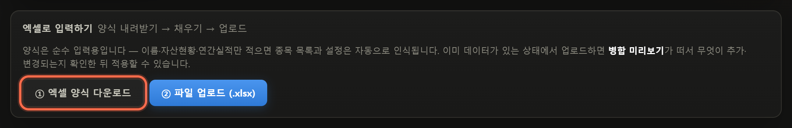
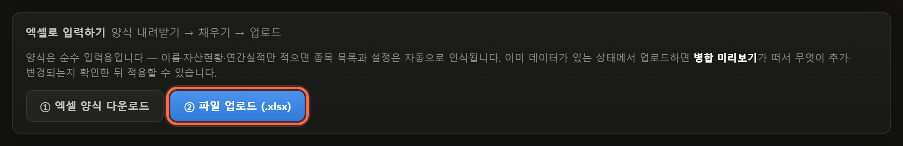
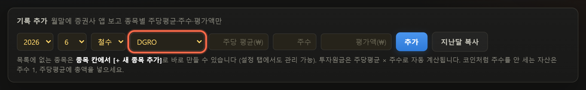
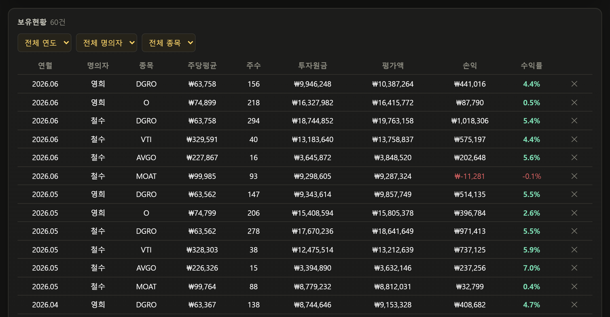
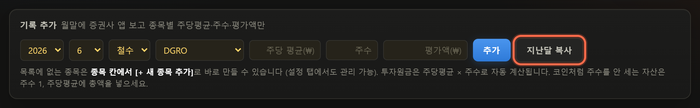
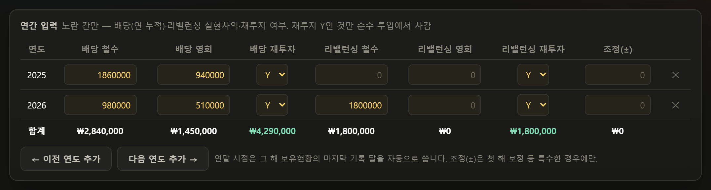
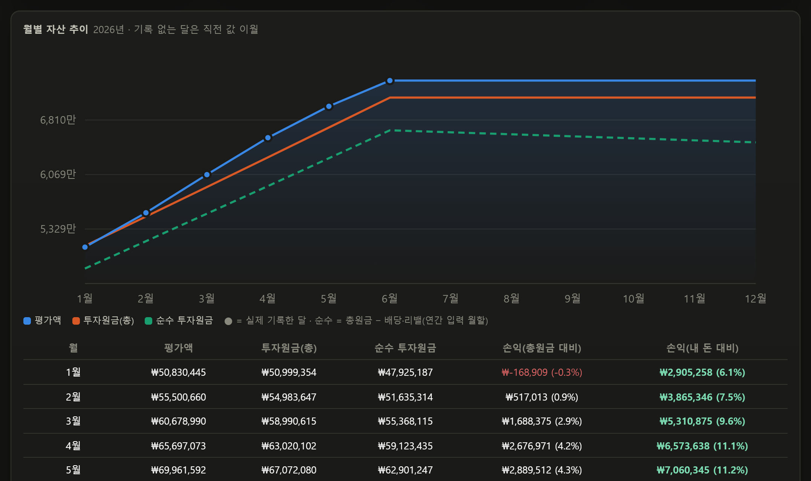
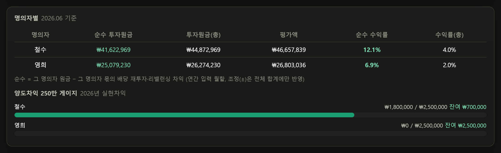
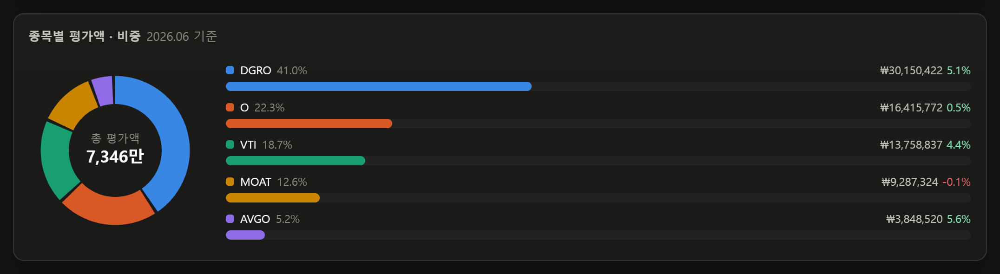
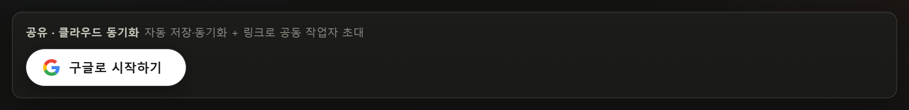

주식 가계부
사용 가이드
한 달에 5분, 월말 잔고만 옮겨 적으면 나머지는 자동으로 계산됩니다
1 · 시작
먼저 엑셀 양식을 받습니다
데이터 탭의 [① 엑셀 양식 다운로드]를 누르면 빈 양식이 받아집니다. 수식이 없는 순수 입력용이라 채우기만 하면 됩니다.

2 · 시작
양식에는 이것만 채웁니다
시트 3개, 노란 칸만 채우면 됩니다. 종목 목록은 적어 넣은 대로 자동 등록됩니다.
| 설정 | 이름 ① (본인) · 이름 ② (공동 작업자) · 양도차익 연 목표 |
|---|
| 자산현황 | 월말 잔고를 한 줄씩 — 연도 · 월 · 명의자 · 종목 · 주당 평균 · 보유 주수 · 평가액
증권사 잔고 화면을 그대로 옮겨 적으면 됩니다 |
|---|
| 연간실적 | 연도별로 — 배당금(각자) · 배당 재투자 Y/N · 리밸런싱 차익(각자) · 리밸런싱 재투자 Y/N |
|---|
3 · 시작
채운 파일을 올리면 끝
[② 파일 업로드]로 올리면 종목과 이름까지 자동 인식됩니다. 이미 데이터가 있으면 무엇이 추가·변경되는지 먼저 보여줍니다.

4 · 종목
목록에 없는 종목은 여기서 바로 추가
보유현황 탭의 종목 칸을 열어 맨 아래 [+ 새 종목 추가…]를 고르고 이름을 적으면 끝입니다. 설정 탭까지 갈 필요 없습니다.

5 · 기록
월말 잔고를 그대로 옮겨 적습니다
증권사 앱을 보며 주당 평균과 주수, 평가액만 넣으면 됩니다. 투자원금은 자동으로 계산됩니다.

6 · 매달
다음 달부터는 [지난달 복사]로 3초
지난달 종목 구성이 그대로 복사되고 평가액만 비워집니다. 바뀐 종목만 고치면 한 달치 기록이 끝납니다.

7 · 연간
배당과 리밸런싱은 그 해 누적값으로
월별로 나눠 적지 않습니다. 한 해 동안 받은 배당 합계와 그 해 리밸런싱으로 실현한 차익 합계를 사용자별로 한 줄에 넣으면 됩니다. 재투자 Y인 금액만 순수 투자원금에서 빠집니다.

8 · 결과
파란 선과 초록 점선의 간격이 내 돈이 불어난 양
파란 선은 평가액, 주황 선은 증권사 기준 원금, 초록 점선은 배당·리밸런싱을 뺀 진짜 내 돈입니다.

9 · 결과
사용자별로 두 기준을 비교합니다
같은 자산인데 순수 수익률과 증권사 방식 수익률이 이만큼 차이 납니다.

10 · 결과
종목 비중은 한눈에
도넛과 막대로 구성비를 보여주고 종목마다 평가액·원금·수익률을 함께 확인할 수 있습니다.

11 · 공유
링크 하나로 둘이 같이 씁니다
초대 링크를 보내고 상대가 구글 로그인하면 같은 장부를 함께 씁니다. 한쪽이 고치면 상대 화면도 바로 바뀝니다.

자세한 설명이 필요하면 아래에서 찾아보세요.
01 · 진짜 수익률이란
증권사 앱의 수익률에는 함정이 하나 있습니다.
- 배당을 재투자하면 그 돈이 투자원금에 합산됩니다
- 리밸런싱(익절 후 재매수)을 하면 실현차익도 원금이 됩니다
그래서 오래 투자할수록 원금이 부풀고 내 통장에서 실제로 나간 돈 대비 성과는
어디에도 나오지 않습니다. 이 앱은 두 숫자를 나란히 보여줍니다.
| 투자원금(총) | 증권사가 보여주는 원금 — 배당 재투자와 리밸런싱 재매수 포함 |
|---|
| 순수 투자원금 | 진짜 내 돈 — 위의 둘을 뺀 금액 |
|---|
| 수익률(총원금 대비) | 증권사 방식 |
|---|
| 순수 수익률 | 내 돈 기준 — 이 앱을 쓰는 이유 |
|---|
예시 — 매년 배당을 전부 재투자해 온 사람이라면 증권사 화면보다 순수 수익률이 훨씬 높게 나옵니다.
그게 실제 성과입니다.
02 · 시작하기
1
사이트에 접속해 [구글로 시작하기]를 누릅니다. 별도 회원가입은 없습니다.
2
장부 만들기 화면에서 셋 중 하나를 고릅니다.
- 엑셀로 한 번에 — 기존 기록이 있다면 추천 (아래 05 참고)
- 빈 장부로 시작 — 이번 달부터 손으로 기록
- JSON 복원 — 예전에 받아둔 백업 파일이 있을 때
저장 버튼이 없습니다. 입력하는 즉시 클라우드에 자동 저장됩니다.
03 · 종목 추가하기
기록을 남기려면 먼저 종목이 목록에 있어야 합니다. 두 곳에서 추가할 수 있습니다.
1
기록하면서 바로 추가 (권장)
보유현황 탭 → 기록 추가 줄의 종목 선택 칸에서 맨 아래 [+ 새 종목 추가…]를 고릅니다.
종목명을 적고 [종목 추가]를 누르면 즉시 목록에 들어가고 바로 선택됩니다.
2
설정 탭에서 관리
설정 탭 → 종목 관리에서 추가·삭제할 수 있습니다. 티커(예: SCHD)는 선택 입력입니다.
엑셀로 시작했다면 종목을 따로 추가할 필요가 없습니다.
업로드한 파일의 자산현황에 적힌 종목이 자동으로 등록됩니다.
설정 탭에서는 이 밖에 명의자 호칭(본인·공동 작업자·공동)과
양도차익 연간 목표(기본 250만원)도 정할 수 있습니다.
04 · 매달 하는 일
월말에 보유현황 탭에서 3분이면 끝납니다.
1
[지난달 복사]를 누릅니다. 지난달 종목 구성이 이번 달로 복사됩니다.
2
증권사 앱을 보며 바뀐 것만 수정합니다 (주당 평균 · 주수).
3
평가액 칸에 이번 달 평가금액을 넣고 Enter를 누릅니다.
- 같은 (연월 · 명의자 · 종목)을 또 넣으면 덮어쓸지 물어봅니다
- 표의 주당평균 · 주수 · 평가액은 언제든 눌러서 바로 고칠 수 있습니다. 금액은 천 단위 쉼표가 자동으로 붙습니다
- 한두 달 건너뛰어도 됩니다. 빈 달은 직전 기록으로 이어서 계산합니다
- 코인처럼 주수를 안 세는 자산은 주수 1 · 주당평균에 총액을 넣으세요
과거 달을 채우고 싶다면
수익률은 원금이 얼마나 늘었는지로 계산하기 때문에 비교할 달이 하나는 있어야 숫자가 나옵니다.
한 달치만 넣고 대시보드가 비어 보인다면 지난달을 채워 보세요.
1
보유현황 탭 위에서 채우고 싶은 과거 연월을 고릅니다.
2
버튼이 [이전 달 만들기]로 바뀝니다. 누르면 종목이 한 번에 복사됩니다.
3
그 달 기준으로 달라진 주수와 평가액을 표에서 고칩니다. 지난달에 100주였는데 이번 달에 110주가 됐다면 100으로 되돌려 주세요.
여러 달치를 한꺼번에 넣을 때는 데이터 탭에서 엑셀 양식으로 올리는 편이 빠릅니다.
05 · 엑셀로 한 번에 넣기
데이터 탭에서 [① 엑셀 양식 다운로드] → 채우기 → [파일 업로드] 순서입니다. 시트는 3개입니다.
| 설정 | 이름 ① (본인) · 이름 ② (공동 작업자) · 공동 명의 표기 · 양도차익 목표 |
|---|
| 자산현황 | 연도 · 월 · 명의자 · 종목 · 주당 평균 · 보유 주수 · 평가액
증권사 잔고 화면을 그대로 옮겨 적으면 됩니다 |
|---|
| 연간실적 | 연도별 배당금 · 리밸런싱 차익과 각각의 재투자 여부 |
|---|
- "예시"라고 적힌 행은 지우고 쓰세요 (안 지워도 무시됩니다)
- 매달이 어려우면 분기별로만 적어도 계산됩니다
- 이미 데이터가 있는 상태에서 올리면 병합 미리보기가 떠서 무엇이 추가·변경되는지 확인한 뒤 적용합니다
06 · 연간 배당·리밸런싱
연간 통계 탭에서 1년에 한 번 넣으면 됩니다.
| 배당금 | 그 해 받은 세후 배당 합계 (사람별) |
|---|
| 배당 재투자 | 배당을 다시 투자에 썼으면 Y |
|---|
| 리밸런싱 차익 | 익절 후 재매수로 실현한 양도차익 (매도 총액이 아님) |
|---|
| 리밸런싱 재투자 | 그 차익을 다시 투자에 썼으면 Y |
|---|
재투자 Y인 금액만 순수 투자원금에서 빠집니다.
배당을 생활비로 썼다면 N으로 두세요 — 그 돈은 내가 넣은 원금이 아니라 꺼내 쓴 수익이기 때문입니다.
07 · 대시보드 보는 법
위쪽 카드 4개 — 총 평가액 · 누적 실질 수익률 · 그 해 수익률 · 그 해 배당금.
오른쪽 위에서 연도를 바꾸거나 전체 기간을 고를 수 있습니다.
| 파란 선 | 평가액 (지금 얼마) |
|---|
| 주황 선 | 투자원금(총) — 증권사 기준 |
|---|
| 초록 점선 | 순수 투자원금 — 진짜 내 돈 |
|---|
파란 선과 초록 점선의 간격이 내 돈이 불어난 양입니다. 차트 아래에는 같은 내용이 월별 표로도 나옵니다.
- 명의자별 — 사람별로 순수/총 두 기준의 수익률 비교
- 종목별 비중 — 도넛 차트. 마우스를 올리면 상세가 뜹니다
- 종목 기간 조회 — 시작·종료 연월을 골라 특정 구간 성과만 분리해서 봅니다. 비우면 전체 누적
- 양도차익 게이지 — 연간 실현차익을 1인당 목표(기본 250만원) 대비로 추적
08 · 둘이 함께 쓰기
1
데이터 탭 → [공동 작업자 초대 링크 만들기]
3
받은 사람이 링크를 열고 구글 로그인하면 같은 장부에 합류합니다
이후에는 구글 문서처럼 동작합니다. 한 사람이 고치면 상대 화면도 실시간으로 바뀝니다.
카카오톡으로 보낼 때 — 받은 사람은 링크를 길게 눌러 크롬이나 사파리로 열어야 합니다.
카카오톡 안의 브라우저에서는 구글 로그인이 막힐 수 있습니다.
- 한 장부는 최대 2명까지입니다
- 받은 사람이 이미 자기 장부를 쓰고 있었다면 두 장부를 합칠지 고르는 창이 뜹니다
- 공유 취소는 장부를 만든 사람만 할 수 있고, 상대 명의 데이터를 지울지는 직접 고릅니다
09 · 백업과 초기화
- 엑셀 백업 — 업로드 양식과 같은 형식입니다. 열어서 눈으로 확인할 수 있고 그대로 다시 올리면 복원됩니다
- JSON 백업 — 전체 데이터 파일
- 장부 초기화 — 백업 파일을 자동으로 내려받은 뒤 전부 비웁니다 (공유 중이면 상대 화면도 함께)
데이터는 클라우드에 저장되므로 기기를 바꿔도 구글 로그인만 하면 그대로 이어집니다.
10 · 자주 묻는 질문
무료인가요?
네.
개인정보를 수집하나요?
로그인용 구글 이메일이 전부입니다. 장부에는 주민번호 · 계좌번호 같은 개인정보를 절대 넣지 마세요.
종목 · 주수 · 금액만으로 충분히 동작합니다. 자세한 내용은 개인정보처리방침을 보세요.
평가액을 모르는 달이 있으면?
비워두면 됩니다. 나중에 그 행의 입력칸에 채우면 됩니다.
둘이 동시에 수정하면 꼬이지 않나요?
저장할 때 서로의 변경을 자동으로 합칩니다. 같은 항목을 정확히 동시에 고치는 경우만 나중 저장이 남습니다.
휴대폰에서도 되나요?
네. 앱 설치 없이 브라우저로 그대로 쓰면 됩니다.
"로그인 시도가 만료되었습니다"라고 떠요.
로그인 버튼을 다시 누르면 됩니다. 링크는 일반 브라우저에서 여는 게 좋습니다.
시작하기
예시 데이터로 둘러보기